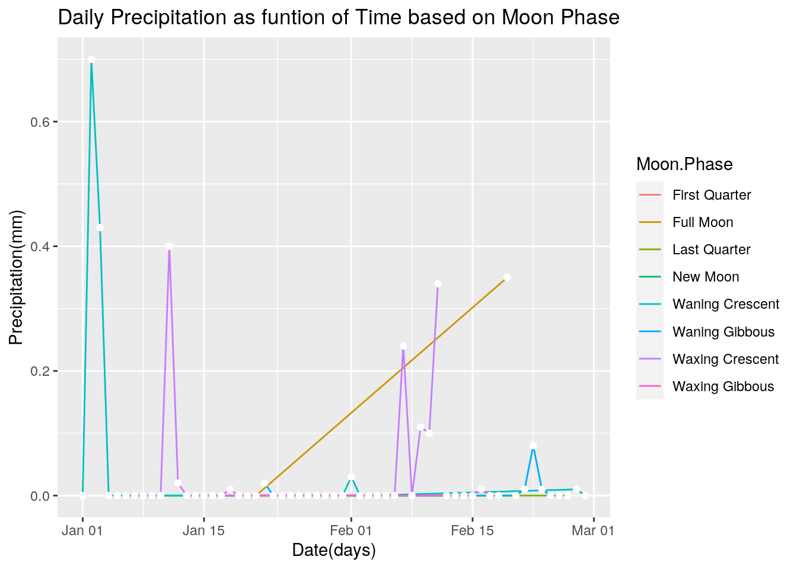
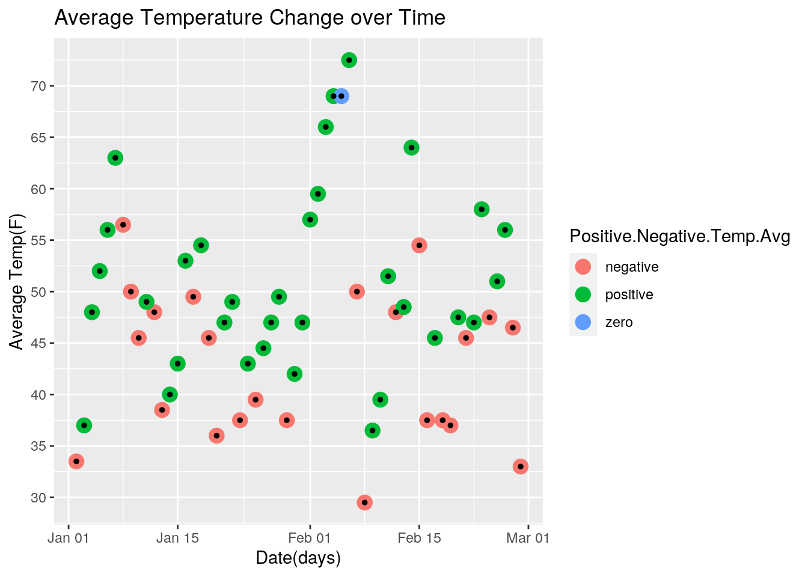
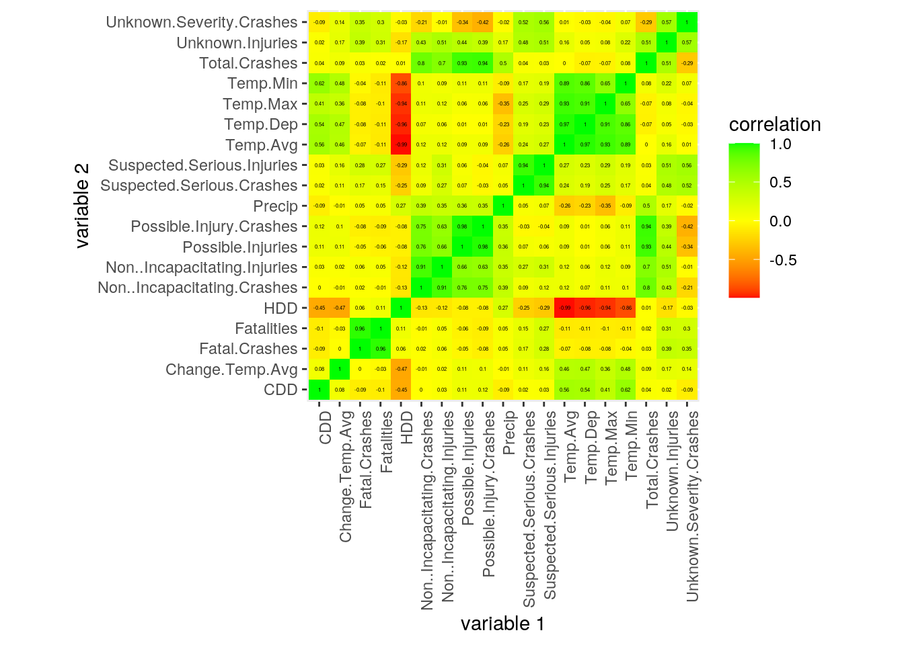
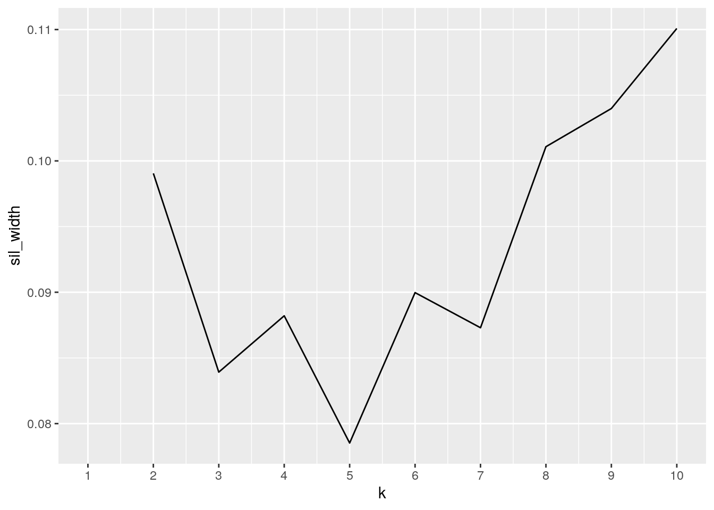
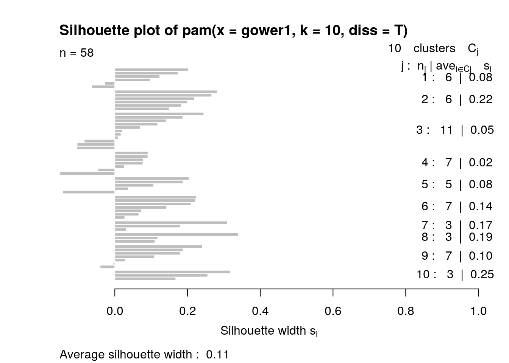
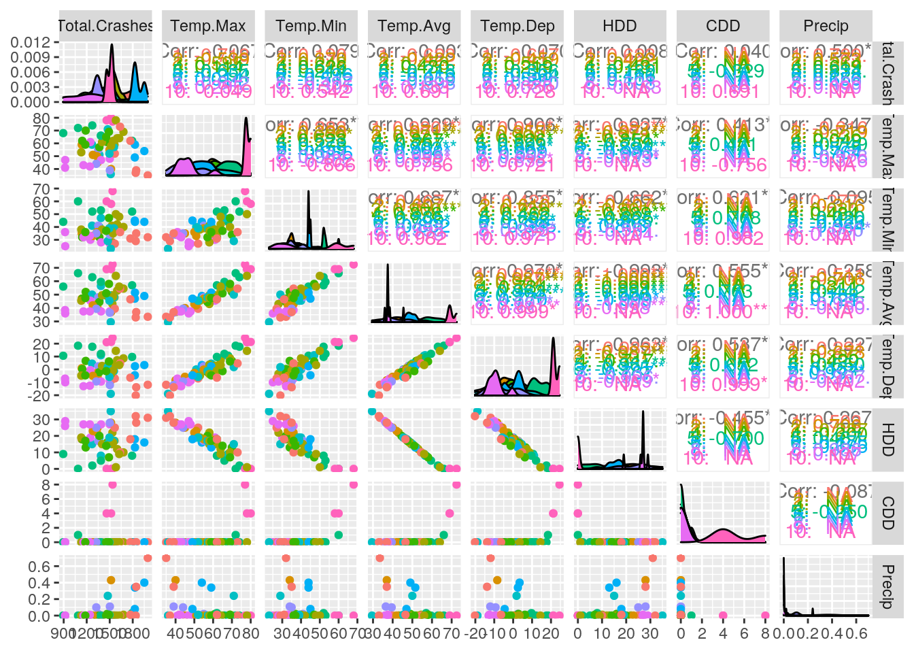

library(tidyverse)
car <- read.csv("cars1.csv")
weather <- read.csv("weather1.csv")
moon <- read.csv("moon.csv")
data <- car %>% left_join(weather, by = "Date") %>% left_join(moon,
by = "Date")
head(car)## Date Fatal.Crashes Fatalities Suspected.Serious.Crashes
## 1 1/1/2019 16 17 31
## 2 1/2/2019 7 9 42
## 3 1/3/2019 9 11 21
## 4 1/4/2019 6 7 31
## 5 1/5/2019 6 7 38
## 6 1/6/2019 8 9 33
## Suspected.Serious.Injuries Non..Incapacitating.Crashes
## 1 40 97
## 2 51 173
## 3 28 124
## 4 38 152
## 5 49 119
## 6 44 102
## Non..Incapacitating.Injuries Possible.Injury.Crashes Possible.Injuries
## 1 124 157 273
## 2 235 336 512
## 3 169 280 437
## 4 198 310 511
## 5 175 226 369
## 6 161 167 292
## Non.Injury.Crashes Non.Injuries Unknown.Severity.Crashes Unknown.Injuries
## 1 529 1,637 124 287
## 2 1,387 3,614 51 252
## 3 1,036 2,782 47 195
## 4 1,014 3,141 49 231
## 5 740 2,463 58 204
## 6 519 1,631 65 194
## Total.Crashes
## 1 954
## 2 1996
## 3 1517
## 4 1562
## 5 1187
## 6 894head(weather)## Date Temp.Max Temp.Min Temp.Avg Temp.Dep HDD CDD Precip New.Snow
## 1 1/1/2019 43 34 38.5 -6.9 26 0 0.00 0
## 2 1/2/2019 35 32 33.5 -11.9 31 0 0.70 0
## 3 1/3/2019 40 34 37.0 -8.4 28 0 0.43 0
## 4 1/4/2019 59 37 48.0 2.6 17 0 0.00 0
## 5 1/5/2019 70 34 52.0 6.6 13 0 0.00 0
## 6 1/6/2019 68 44 56.0 10.6 9 0 0.00 0
## Snow.Depth
## 1 0
## 2 0
## 3 0
## 4 0
## 5 0
## 6 0head(moon)## Date Moon.Phase
## 1 1/1/2019 Waning Crescent
## 2 1/2/2019 Waning Crescent
## 3 1/3/2019 Waning Crescent
## 4 1/4/2019 Waning Crescent
## 5 1/5/2019 Waning Crescent
## 6 1/6/2019 New MoonMy interests first brought me to explore causes for car incidents in Texas. Upon further investigation, I decided to explore weather datasets. My first dataset is from the Texas Department of Transprotation that reports the number of crashes and injuries by Dates. My second dataset is from the National Weather Service Forecast Office that reports daily weather data in the Texas region. My third dataset comes from a website that tracks daily moon phases as I considered how the moon may have affected weather conditions. For all three datasets, I only only chose dates in January and February 2019 to limit the size of my data and also observe any patterns particularly at the start of a new year. I had expected some positive correlation between extreme weather conditions and increased traffic incidents.
A left join was performed to combine the following three datasets: car accidents, weather, and moon phase. For datasets car and weather, I only chose the Date column in addition to variables of interest as shown later in the data analysis. I did not have to reshape any of my datasets because each observation date in January and Febraury had its own row and each variable had its own column. A left join was most convenient because the rows easily combined by date without any NAs in the added columns. I was also able to control the order at which the added variables appear as new columns. All were joined based on the common value ID of the days of January and February of the year 2019. Therefore, there were 59 observations in each dataset to account for 31 days in January and 28 days in February. No observations were dropped to account for each day in the two months.
data1 <- data %>% select(1, 2, 3, 9, 15, 16, 17, 19, 21, 14,
24) %>% arrange(desc(Precip))
precip <- data1 %>% filter(Precip > 0) %>% arrange(desc(Precip)) #days with precipitation
data1 <- data1 %>% mutate(Change.Temp.Avg = (Temp.Avg - lag(Temp.Avg))) #change of avg. temp
# done per variable/column
dataMax <- data1 %>% summarize(Mean = mean(Temp.Max, na.rm = T),
Min = min(Temp.Max, na.rm = T), Max = max(Temp.Max, na.rm = T),
Sd = sd(Temp.Max, na.rm = T), Var = var(Temp.Max, na.rm = T)) %>%
as.data.frame() %>% pivot_longer(c(1:5), names_to = "stats",
values_to = "Temp.Max")
dataMin <- data1 %>% summarize(Mean = mean(Temp.Min, na.rm = T),
Min = min(Temp.Min, na.rm = T), Max = max(Temp.Min, na.rm = T),
Sd = sd(Temp.Min, na.rm = T), Var = var(Temp.Min, na.rm = T)) %>%
as.data.frame() %>% pivot_longer(c(1:5), names_to = "stats",
values_to = "Temp.Min")
dataAvg <- data1 %>% summarize(Mean = mean(Temp.Avg, na.rm = T),
Min = min(Temp.Avg, na.rm = T), Max = max(Temp.Avg, na.rm = T),
Sd = sd(Temp.Avg, na.rm = T), Var = var(Temp.Avg, na.rm = T)) %>%
pivot_longer(c(1:5), names_to = "stats", values_to = "Temp.Avg")
dataPrep <- data1 %>% summarize(Mean = mean(Precip, na.rm = T),
Min = min(Precip, na.rm = T), Max = max(Precip, na.rm = T),
Sd = sd(Precip, na.rm = T), Var = var(Precip, na.rm = T)) %>%
pivot_longer(c(1:5), names_to = "stats", values_to = "Prep")
dataCrash <- data1 %>% summarize(Mean = mean(Total.Crashes, na.rm = T),
Min = min(Total.Crashes, na.rm = T), Max = max(Total.Crashes,
na.rm = T), Sd = sd(Total.Crashes, na.rm = T), Var = var(Total.Crashes,
na.rm = T)) %>% pivot_longer(c(1:5), names_to = "stats",
values_to = "Total.Crashes")
dataChange <- data1 %>% summarize(Mean = mean(Change.Temp.Avg,
na.rm = T), Min = min(Change.Temp.Avg, na.rm = T), Max = max(Change.Temp.Avg,
na.rm = T), Sd = sd(Change.Temp.Avg, na.rm = T), Var = var(Change.Temp.Avg,
na.rm = T)) %>% pivot_longer(c(1:5), names_to = "stats",
values_to = "Change.Temp.Avg")
data.Fatal.Crashes <- data1 %>% summarize(Mean = mean(Fatal.Crashes,
na.rm = T), Min = min(Fatal.Crashes, na.rm = T), Max = max(Fatal.Crashes,
na.rm = T), Sd = sd(Fatal.Crashes, na.rm = T), Var = var(Fatal.Crashes,
na.rm = T)) %>% pivot_longer(c(1:5), names_to = "stats",
values_to = "Fatal.Crashes")
data.Fatalities <- data1 %>% summarize(Mean = mean(Fatalities,
na.rm = T), Min = min(Fatalities, na.rm = T), Max = max(Fatalities,
na.rm = T), Sd = sd(Fatalities, na.rm = T), Var = var(Fatalities,
na.rm = T)) %>% pivot_longer(c(1:5), names_to = "stats",
values_to = "Fatalities")
data.Possible.Injuries <- data1 %>% summarize(Mean = mean(Possible.Injuries,
na.rm = T), Min = min(Possible.Injuries, na.rm = T), Max = max(Possible.Injuries,
na.rm = T), Sd = sd(Possible.Injuries, na.rm = T), Var = var(Possible.Injuries,
na.rm = T)) %>% pivot_longer(c(1:5), names_to = "stats",
values_to = "Possible.Injuries")
data.HDD <- data1 %>% summarize(Mean = mean(HDD, na.rm = T),
Min = min(HDD, na.rm = T), Max = max(HDD, na.rm = T), Sd = sd(HDD,
na.rm = T), Var = var(HDD, na.rm = T)) %>% pivot_longer(c(1:5),
names_to = "stats", values_to = "HDD")
dataS <- dataMax %>% left_join(dataMin, by = "stats") %>% left_join(dataAvg,
by = "stats") %>% left_join(dataChange, by = "stats") %>%
left_join(dataPrep, by = "stats") %>% left_join(dataCrash,
by = "stats") %>% left_join(data.Fatal.Crashes, by = "stats") %>%
left_join(data.Fatalities, by = "stats") %>% left_join(data.Possible.Injuries,
by = "stats") %>% left_join(data.HDD, by = "stats")
# grouped data
Maximum_Temperature <- data1 %>% group_by(Moon.Phase) %>% summarize(Mean = mean(Temp.Max,
na.rm = T), Min = min(Temp.Max, na.rm = T), Max = max(Temp.Max,
na.rm = T), Sd = sd(Temp.Max, na.rm = T), Var = var(Temp.Max,
na.rm = T)) %>% as.data.frame() %>% select(Temp.Max.Moon.Phase = Moon.Phase,
everything())
Minimum_Temperature <- data1 %>% group_by(Moon.Phase) %>% summarize(Mean = mean(Temp.Min,
na.rm = T), Min = min(Temp.Min, na.rm = T), Max = max(Temp.Min,
na.rm = T), Sd = sd(Temp.Min, na.rm = T), Var = var(Temp.Min,
na.rm = T)) %>% as.data.frame() %>% select(Temp.Min.Moon.Phase = Moon.Phase,
everything())
Average_Temperature <- data1 %>% group_by(Moon.Phase) %>% summarize(Mean = mean(Temp.Avg,
na.rm = T), Min = min(Temp.Avg, na.rm = T), Max = max(Temp.Avg,
na.rm = T), Sd = sd(Temp.Avg, na.rm = T), Var = var(Temp.Avg,
na.rm = T)) %>% as.data.frame() %>% select(Temp.Avg.Moon.Phase = Moon.Phase,
everything())
Precipitation <- data1 %>% group_by(Moon.Phase) %>% summarize(Mean = mean(Precip,
na.rm = T), Min = min(Precip, na.rm = T), Max = max(Precip,
na.rm = T), Sd = sd(Precip, na.rm = T), Var = var(Precip,
na.rm = T)) %>% as.data.frame() %>% select(Precip.Moon.Phase = Moon.Phase,
everything())
Total_Crashes <- data1 %>% group_by(Moon.Phase) %>% summarize(Mean = mean(Total.Crashes,
na.rm = T), Min = min(Total.Crashes, na.rm = T), Max = max(Total.Crashes,
na.rm = T), Sd = sd(Total.Crashes, na.rm = T), Var = var(Total.Crashes,
na.rm = T)) %>% as.data.frame() %>% select(Crash.Moon.Phase = Moon.Phase,
everything())
Change_Average_Temperature <- data1 %>% group_by(Moon.Phase) %>%
summarize(Mean = mean(Change.Temp.Avg, na.rm = T), Min = min(Change.Temp.Avg,
na.rm = T), Max = max(Change.Temp.Avg, na.rm = T), Sd = sd(Change.Temp.Avg,
na.rm = T), Var = var(Change.Temp.Avg, na.rm = T)) %>%
select(Avg.Temp.Change.Moon.Phase = Moon.Phase, everything())
Fatal_Crashes <- data1 %>% group_by(Moon.Phase) %>% summarize(Mean = mean(Fatal.Crashes,
na.rm = T), Min = min(Fatal.Crashes, na.rm = T), Max = max(Fatal.Crashes,
na.rm = T), Sd = sd(Fatal.Crashes, na.rm = T), Var = var(Fatal.Crashes,
na.rm = T)) %>% select(Fatal.Crashes.Moon.Phase = Moon.Phase,
everything())
Possible_Injuries <- data1 %>% group_by(Moon.Phase) %>% summarize(Mean = mean(Possible.Injuries,
na.rm = T), Min = min(Possible.Injuries, na.rm = T), Max = max(Possible.Injuries,
na.rm = T), Sd = sd(Possible.Injuries, na.rm = T), Var = var(Possible.Injuries,
na.rm = T)) %>% select(Possible.Injuries.Moon.Phase = Moon.Phase,
everything())
Fatalities <- data1 %>% group_by(Moon.Phase) %>% summarize(Mean = mean(Fatalities,
na.rm = T), Min = min(Fatalities, na.rm = T), Max = max(Fatalities,
na.rm = T), Sd = sd(Fatalities, na.rm = T), Var = var(Fatalities,
na.rm = T)) %>% select(Fatalitites.Moon.Phase = Moon.Phase,
everything())
HDD <- data1 %>% group_by(Moon.Phase) %>% summarize(Mean = mean(HDD,
na.rm = T), Min = min(HDD, na.rm = T), Max = max(HDD, na.rm = T),
Sd = sd(HDD, na.rm = T), Var = var(HDD, na.rm = T)) %>% select(HDD.Moon.Phase = Moon.Phase,
everything())
dataS## # A tibble: 5 x 11
## stats Temp.Max Temp.Min Temp.Avg Change.Temp.Avg Prep Total.Crashes
## <chr> <dbl> <dbl> <dbl> <dbl> <dbl> <dbl>
## 1 Mean 57.1 38.7 47.9 -0.00862 0.0486 1438.
## 2 Min 35 23 29.5 -43 0 894
## 3 Max 80 68 72.5 18.5 0.7 1996
## 4 Sd 11.6 9.20 9.48 10.5 0.133 250.
## 5 Var 135. 84.6 90.0 110. 0.0176 62694.
## # … with 4 more variables: Fatal.Crashes <dbl>, Fatalities <dbl>,
## # Possible.Injuries <dbl>, HDD <dbl>Maximum_Temperature## Temp.Max.Moon.Phase Mean Min Max Sd Var
## 1 First Quarter 51.00000 45 57 8.485281 72.00000
## 2 Full Moon 49.00000 39 59 14.142136 200.00000
## 3 Last Quarter 63.00000 62 64 1.414214 2.00000
## 4 New Moon 74.00000 68 80 8.485281 72.00000
## 5 Waning Crescent 54.28571 35 72 12.250140 150.06593
## 6 Waning Gibbous 57.09091 48 69 6.518505 42.49091
## 7 Waxing Crescent 57.42857 36 78 14.281318 203.95604
## 8 Waxing Gibbous 58.33333 42 78 11.664502 136.06061Minimum_Temperature## Temp.Min.Moon.Phase Mean Min Max Sd Var
## 1 First Quarter 37.00000 35 39 2.828427 8.00000
## 2 Full Moon 35.00000 35 35 0.000000 0.00000
## 3 Last Quarter 40.00000 32 48 11.313708 128.00000
## 4 New Moon 51.00000 44 58 9.899495 98.00000
## 5 Waning Crescent 38.14286 28 60 9.788982 95.82418
## 6 Waning Gibbous 35.63636 27 47 6.741999 45.45455
## 7 Waxing Crescent 42.42857 23 68 11.817290 139.64835
## 8 Waxing Gibbous 36.50000 25 50 6.445576 41.54545Average_Temperature## Temp.Avg.Moon.Phase Mean Min Max Sd Var
## 1 First Quarter 44.00000 40.0 48.0 5.656854 32.00000
## 2 Full Moon 42.00000 37.0 47.0 7.071068 50.00000
## 3 Last Quarter 51.50000 47.0 56.0 6.363961 40.50000
## 4 New Moon 62.50000 56.0 69.0 9.192388 84.50000
## 5 Waning Crescent 46.21429 33.0 66.0 10.026339 100.52747
## 6 Waning Gibbous 46.36364 37.5 58.0 5.550184 30.80455
## 7 Waxing Crescent 49.92857 29.5 72.5 12.250364 150.07143
## 8 Waxing Gibbous 47.41667 36.0 64.0 8.344387 69.62879Precipitation## Precip.Moon.Phase Mean Min Max Sd Var
## 1 First Quarter 0.000000000 0 0.00 0.000000000 0.000000e+00
## 2 Full Moon 0.175000000 0 0.35 0.247487373 6.125000e-02
## 3 Last Quarter 0.000000000 0 0.00 0.000000000 0.000000e+00
## 4 New Moon 0.000000000 0 0.00 0.000000000 0.000000e+00
## 5 Waning Crescent 0.083571429 0 0.70 0.210881197 4.447088e-02
## 6 Waning Gibbous 0.010909091 0 0.08 0.023855626 5.690909e-04
## 7 Waxing Crescent 0.086428571 0 0.40 0.138985729 1.931703e-02
## 8 Waxing Gibbous 0.001666667 0 0.01 0.003892495 1.515152e-05Total_Crashes## Crash.Moon.Phase Mean Min Max Sd Var
## 1 First Quarter 1448.500 1342 1555 150.6137 22684.50
## 2 Full Moon 1490.000 1135 1845 502.0458 252050.00
## 3 Last Quarter 1383.000 1142 1624 340.8255 116162.00
## 4 New Moon 1206.000 894 1518 441.2346 194688.00
## 5 Waning Crescent 1475.143 954 1996 299.3714 89623.21
## 6 Waning Gibbous 1491.000 1182 1827 153.1711 23461.40
## 7 Waxing Crescent 1439.643 918 1951 246.7586 60889.79
## 8 Waxing Gibbous 1382.667 920 1679 243.6593 59369.88Change_Average_Temperature## # A tibble: 8 x 6
## Avg.Temp.Change.Moon.Phase Mean Min Max Sd Var
## <fct> <dbl> <dbl> <dbl> <dbl> <dbl>
## 1 First Quarter 10 1.5 18.5 12.0 144.
## 2 Full Moon -0.5 -12 11 16.3 264.
## 3 Last Quarter 3.75 2.5 5 1.77 3.12
## 4 New Moon 3.5 3 4 0.707 0.5
## 5 Waning Crescent 0.269 -23 12.5 10.6 111.
## 6 Waning Gibbous 3.64 -9.5 12.5 6.34 40.2
## 7 Waxing Crescent -3.68 -43 14.5 13.9 193.
## 8 Waxing Gibbous -2.17 -17 15.5 9.37 87.8Fatal_Crashes## # A tibble: 8 x 6
## Fatal.Crashes.Moon.Phase Mean Min Max Sd Var
## <fct> <dbl> <int> <int> <dbl> <dbl>
## 1 First Quarter 9 9 9 0 0
## 2 Full Moon 8.5 8 9 0.707 0.5
## 3 Last Quarter 5 5 5 0 0
## 4 New Moon 7 6 8 1.41 2
## 5 Waning Crescent 8.21 4 16 3.26 10.6
## 6 Waning Gibbous 8.18 4 13 2.64 6.96
## 7 Waxing Crescent 8.21 4 16 3.62 13.1
## 8 Waxing Gibbous 7.83 3 12 2.92 8.52Possible_Injuries## # A tibble: 8 x 6
## Possible.Injuries.Moon.Phase Mean Min Max Sd Var
## <fct> <dbl> <int> <int> <dbl> <dbl>
## 1 First Quarter 418. 372 465 65.8 4324.
## 2 Full Moon 442. 333 550 153. 23544.
## 3 Last Quarter 434. 377 490 79.9 6384.
## 4 New Moon 387 292 482 134. 18050
## 5 Waning Crescent 422. 273 551 84.5 7146.
## 6 Waning Gibbous 436. 360 538 47.7 2271.
## 7 Waxing Crescent 405. 248 559 78.0 6090.
## 8 Waxing Gibbous 391 224 512 87.7 7693.Fatalities## # A tibble: 8 x 6
## Fatalitites.Moon.Phase Mean Min Max Sd Var
## <fct> <dbl> <int> <int> <dbl> <dbl>
## 1 First Quarter 9 9 9 0 0
## 2 Full Moon 9 9 9 0 0
## 3 Last Quarter 5 5 5 0 0
## 4 New Moon 7.5 6 9 2.12 4.5
## 5 Waning Crescent 9 4 17 3.44 11.8
## 6 Waning Gibbous 9.36 4 16 3.50 12.3
## 7 Waxing Crescent 8.57 4 16 4.03 16.3
## 8 Waxing Gibbous 8.83 3 14 3.27 10.7HDD## # A tibble: 8 x 6
## HDD.Moon.Phase Mean Min Max Sd Var
## <fct> <dbl> <int> <int> <dbl> <dbl>
## 1 First Quarter 21 17 25 5.66 32
## 2 Full Moon 23 18 28 7.07 50
## 3 Last Quarter 13.5 9 18 6.36 40.5
## 4 New Moon 4.5 0 9 6.36 40.5
## 5 Waning Crescent 18.6 0 32 9.83 96.7
## 6 Waning Gibbous 18.4 7 27 5.41 29.3
## 7 Waxing Crescent 15.6 0 35 10.7 114.
## 8 Waxing Gibbous 17.2 1 29 8.31 69.1When wrangling with my joined dataset, I first began by selecting my 11 variables of interest: date, max temperature, mininum temperature, average temperature, precipitation, total crashes, fatal crashes, fatalities, possible injuries, HDD(heating degree days), and moon phase. My main focus was to explore how temperature or precipitation correlated to reported daily total crashes and if moon phase was a confounding variable. To further explore temperature, I created a new variable column called “Change.Temp.Avg” that reported the change in average temperature comparing today’s average temperature to the previous day’s value. But, the first row reported a NA value because there was no previous averagae temperature value. This was accounted for in subsequent data analysis. I did create a dataset called “precip” that only reported days that rained (prep>0), but there were only 17 reported days which did not meet the 50 observation requirement
I rearranged the summary statistics in an effort to make them appear as wide as possible was unable to pivot_longer my joined dataset. The summary statistics mean, min, max, sd, and var were computed for all 10 numeric variables both unground and grouped to the cateogircal variable moon phase. The summary statistics for each numeric variable was pivoted_longer so the summary statistic per variable could be joined together into a single dataset under the common column of summary statistic. Then, by grouping for each numeric variable’s summary statistics by the moon phase, I explored any correlation of the moon with the numeric variables. To my surprise, I found that there was an increased mean in the HDD based on the increased percent illumination of the moon phase. But, this was not true for the remaining temperature varaibles like min, max, change average temperature, and average temperature. For the car crash data, there also seemed to be no correlation with moon phase. There was also a great degree of variation for total crashes and possible injuries from its arithmetic mean.
library(ggplot2)
data$Date <- as.Date(data$Date, "%m/%d/%Y")
ggplot(data = data, aes(Date, Precip, color = Moon.Phase)) +
geom_line(aes(group = Moon.Phase)) + geom_point(color = "white") +
ggtitle("Daily Precipitation as funtion of Time based on Moon Phase") +
ylab("Precipitation(mm)") + xlab("Date(days)") Plot 1 explored how precipitation changes over dates that were categorized by moon phase under the assumption that the moon can create buldges in the atmosphere and affect precipitation. The results indicate no clear trend. In the two instances of the moon phase waxing crescent during mid January and early February, there is an incidence of precipitation. This is also true for the two instance of the moon phase waning crescent during early January and late February.However, for the rest of the moon phases, there is either zero precipitation of a single day of precipitation.
data2 <- data %>% mutate(Change.Temp.Avg = (Temp.Avg - lag(Temp.Avg)))
data2 <- data2 %>% mutate(Positive.Negative.Temp.Avg = ifelse(Change.Temp.Avg >
0, "positive", ifelse(Change.Temp.Avg <= 0 & 0 <= Change.Temp.Avg,
"zero", "negative")))
data2$Date <- as.Date(data2$Date, "%m/%d/%Y")
dataNA <- data2 %>% na.omit()
ggplot(data = dataNA) + geom_point(mapping = aes(x = Date, y = Temp.Avg,
color = Positive.Negative.Temp.Avg)) + geom_point(stat = "summary",
fun = mean, mapping = aes(x = Date, y = Temp.Avg, color = Positive.Negative.Temp.Avg),
size = 4) + stat_summary(aes(x = Date, y = Temp.Avg), fun = "mean",
size = 1, geom = "point") + ggtitle("Average Temperature Change over Time") +
ylab("Average Temp(F)") + xlab("Date(days)") + labs(fill = "Change in Average Temp") +
scale_y_continuous(breaks = seq(30, 100, 5)) Plot 2 explores how the average temperature changes over the days on Janurary and February. To better show positive or negeative changes in average temperature, I created a categorical variable that recognized if the change is a positive value, negative value, or a zero value. The positive, negative, and zero change correspond to the following colors: green, red, and blue. The graph show show no apparent cyclical trend or increase, decrease, or no change in average daily temperature. There are red and green data points all across the entire two months. There was only a single day where the daily temperature did not change from the day prior. *
data2 <- data %>% mutate(Change.Temp.Avg = (Temp.Avg - lag(Temp.Avg)))
data2 <- data2 %>% mutate(Positive.Negative.Temp.Avg = ifelse(Change.Temp.Avg >
0, "positive", ifelse(Change.Temp.Avg <= 0 & 0 <= Change.Temp.Avg,
"zero", "negative")))
data2$Date <- as.Date(data2$Date, "%m/%d/%Y")
dataNA <- data2 %>% na.omit()
datacor <- dataNA %>% select_if(is.numeric) %>% cor(use = "pair") %>%
as.data.frame()
tidycor <- datacor %>% rownames_to_column("var1") %>% pivot_longer(-1,
names_to = "var2", values_to = "correlation")
tidycor## # A tibble: 400 x 3
## var1 var2 correlation
## <chr> <chr> <dbl>
## 1 Fatal.Crashes Fatal.Crashes 1
## 2 Fatal.Crashes Fatalities 0.963
## 3 Fatal.Crashes Suspected.Serious.Crashes 0.167
## 4 Fatal.Crashes Suspected.Serious.Injuries 0.281
## 5 Fatal.Crashes Non..Incapacitating.Crashes 0.0151
## 6 Fatal.Crashes Non..Incapacitating.Injuries 0.0633
## 7 Fatal.Crashes Possible.Injury.Crashes -0.0836
## 8 Fatal.Crashes Possible.Injuries -0.0454
## 9 Fatal.Crashes Unknown.Severity.Crashes 0.354
## 10 Fatal.Crashes Unknown.Injuries 0.388
## # … with 390 more rowslibrary(ggplot2)
tidycor %>% na.omit() %>% ggplot(aes(var1, var2, fill = correlation)) +
geom_tile() + scale_fill_gradient2(low = "red", mid = "yellow",
high = "green") + geom_text(aes(label = round(correlation,
2)), color = "black", size = 1) + theme(axis.text.x = element_text(angle = 90,
hjust = 1)) + coord_fixed() + xlab("variable 1") + ylab("variable 2") *The correlation heatmap was performed with more variable than previous data anlysis but some were removed upon removing any NA values. It is most apparent that there are strongest correlations between variables of similar information. The green patches are found between the traffic accident data and between the weather data variables. There appears to be no correlation between HDD and the temperature variables as shown by a red patches.
library(cluster)
dataNA %>% select(-1, -26, -24) %>% pam(3)## Medoids:
## ID Fatal.Crashes Fatalities Suspected.Serious.Crashes
## 53 52 9 10 35
## 44 43 6 8 28
## 47 46 9 9 35
## Suspected.Serious.Injuries Non..Incapacitating.Crashes
## 53 40 149
## 44 33 143
## 47 38 121
## Non..Incapacitating.Injuries Possible.Injury.Crashes Possible.Injuries
## 53 217 347 538
## 44 183 297 445
## 47 158 224 366
## Non.Injury.Crashes Non.Injuries Unknown.Severity.Crashes Unknown.Injuries
## 53 18 58 68 327
## 44 4 40 52 226
## 47 35 15 62 224
## Total.Crashes Temp.Max Temp.Min Temp.Avg Temp.Dep HDD CDD Precip New.Snow
## 53 1827 49 45 47.0 -4.5 18 0 0.08 1
## 44 1544 62 35 48.5 -0.9 16 0 0.00 1
## 47 1241 42 33 37.5 -12.6 27 0 0.01 1
## Snow.Depth Change.Temp.Avg
## 53 0 1.5
## 44 0 0.5
## 47 0 -17.0
## Clustering vector:
## 2 3 4 5 6 7 8 9 10 11 12 13 14 15 16 17 18 19 20 21 22 23 24 25 26 27
## 1 2 2 3 3 3 3 3 3 1 3 3 3 3 2 2 2 3 3 3 2 2 2 2 3 3
## 28 29 30 31 32 33 34 35 36 37 38 39 40 41 42 43 44 45 46 47 48 49 50 51 52 53
## 2 3 3 2 1 3 3 2 2 2 2 2 2 3 1 2 2 2 2 3 3 3 1 2 2 1
## 54 55 56 57 58 59
## 2 3 2 2 1 1
## Objective function:
## build swap
## 116.9910 111.3195
##
## Available components:
## [1] "medoids" "id.med" "clustering" "objective" "isolation"
## [6] "clusinfo" "silinfo" "diss" "call" "data"rownames(dataNA) <- NULL
dat2 <- dataNA %>% mutate_if(is.character, as.factor) %>% column_to_rownames("Date")
gower1 <- daisy(dat2, metric = "gower")
sil_width <- vector()
for (i in 2:10) {
pam_fit <- pam(gower1, diss = TRUE, k = i)
sil_width[i] <- pam_fit$silinfo$avg.width
}
ggplot() + geom_line(aes(x = 1:10, y = sil_width)) + scale_x_continuous(name = "k",
breaks = 1:10)
pam10 <- pam(gower1, k = 10, diss = T)
dataNA %>% slice(pam10$id.med)## Date Fatal.Crashes Fatalities Suspected.Serious.Crashes
## 1 2019-02-27 10 10 33
## 2 2019-01-30 4 5 27
## 3 2019-02-13 6 8 28
## Suspected.Serious.Injuries Non..Incapacitating.Crashes
## 1 45 147
## 2 34 115
## 3 33 143
## Non..Incapacitating.Injuries Possible.Injury.Crashes Possible.Injuries
## 1 203 334 501
## 2 152 233 356
## 3 183 297 445
## Non.Injury.Crashes Non.Injuries Unknown.Severity.Crashes Unknown.Injuries
## 1 1,192 3,478 53 302
## 2 865 2,592 36 178
## 3 1,018 3,087 52 226
## Total.Crashes Temp.Max Temp.Min Temp.Avg Temp.Dep HDD CDD Precip New.Snow
## 1 1769 62 31 46.5 -6.4 18 0 0.01 0
## 2 1280 51 33 42.0 -5.0 23 0 0.00 0
## 3 1544 62 35 48.5 -0.9 16 0 0.00 0
## Snow.Depth Moon.Phase Change.Temp.Avg Positive.Negative.Temp.Avg
## 1 0 Waning Crescent -9.5 negative
## 2 0 Waning Crescent 4.5 positive
## 3 0 Waxing Gibbous 0.5 positive
## [ reached 'max' / getOption("max.print") -- omitted 7 rows ]plot(pam10, which = 2)
dataNA %>% slice(pam10$id.med)## Date Fatal.Crashes Fatalities Suspected.Serious.Crashes
## 1 2019-02-27 10 10 33
## 2 2019-01-30 4 5 27
## 3 2019-02-13 6 8 28
## Suspected.Serious.Injuries Non..Incapacitating.Crashes
## 1 45 147
## 2 34 115
## 3 33 143
## Non..Incapacitating.Injuries Possible.Injury.Crashes Possible.Injuries
## 1 203 334 501
## 2 152 233 356
## 3 183 297 445
## Non.Injury.Crashes Non.Injuries Unknown.Severity.Crashes Unknown.Injuries
## 1 1,192 3,478 53 302
## 2 865 2,592 36 178
## 3 1,018 3,087 52 226
## Total.Crashes Temp.Max Temp.Min Temp.Avg Temp.Dep HDD CDD Precip New.Snow
## 1 1769 62 31 46.5 -6.4 18 0 0.01 0
## 2 1280 51 33 42.0 -5.0 23 0 0.00 0
## 3 1544 62 35 48.5 -0.9 16 0 0.00 0
## Snow.Depth Moon.Phase Change.Temp.Avg Positive.Negative.Temp.Avg
## 1 0 Waning Crescent -9.5 negative
## 2 0 Waning Crescent 4.5 positive
## 3 0 Waxing Gibbous 0.5 positive
## [ reached 'max' / getOption("max.print") -- omitted 7 rows ]# install.packages('GGally')
library(GGally)
ggpairs(dat2, columns = 13:20, aes(color = as.factor(pam10$clustering)))
I wanted to compared distances with categorical and numeric data so I decided to use gower’s distances to measures dissimilarities. Then, I needed to pick the number of cluster by calculating silhouette width indexes. I needed to pick the number of clusters(k) that has the highest silhouette width because the within cluster data is more cohesive and between cluster data is more separated. The graph showed that K=10 had the greatest sil_with value. I then used the pam function to determine the 10 final medoids that are the most representative of their cluster. Among all the 10 clusters, there appears to be no apparent trend for any of the variables. The average silhouette width was 0.11 which indicated no substantial structure was found among the 10 clusters. Therefore, it appears that the cluster structure is not apparent and appears to just be noise. The ggpairs of only the principal weather variables shows that there seems to be strong correlation among the temperature variables but not with the precipitation variable. This is equally little correlation with the weather variables and total crashes except with the precipitation variable.